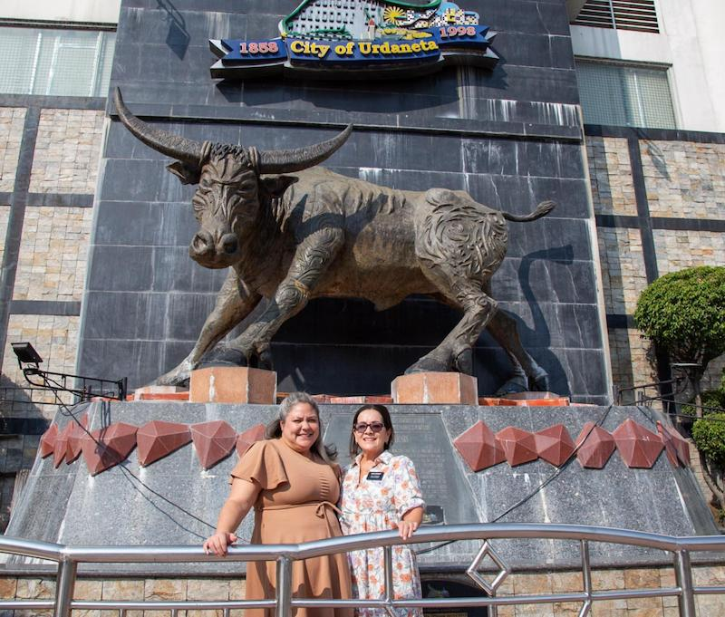

Urdaneta City is one of the five cities located in the Pangasinan province of the Philippines, located on the northern end of the island of Luzon. Urdaneta serves as a crossroads, connecting routes to the major cities in northern Luzon.
Outside of the central shopping area, Urdaneta is still mostly farms. This is why at the very central intersection, a statue of a carabao stands as a landmark for everyone traveling through.
